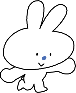

진로·학업 설계
지금 궁금한 것부터 골라 보십시오. 어느 질문에서 시작해도 괜찮습니다.
학생이 선택하는 교육과정, 설계와 점검을 지원합니다.

학생이 자신의 관심과 흥미에 따라 과목을 선택하고, 선택한 과목을 이수해야만 졸업할 수 있는 학생 주도성을 이끌기 위한 고등학교 시스템입니다.
지금 궁금한 것부터 골라 보십시오. 어느 질문에서 시작해도 괜찮습니다.
학교에서, 학교 사이에서, 학교 밖에서, 단계별 안전망이 학생의 과목 선택을 보장합니다.